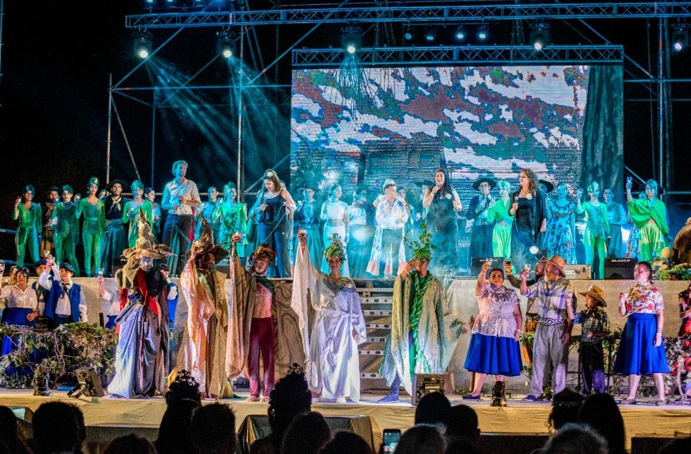
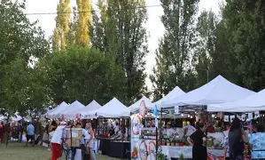

Fiesta de Lagunas del Rosario
9 al 11 de octubre de 2026
Una celebración de fe, cultura y tradición en honor a la Virgen del Rosario.

Vendimia de Lavalle
21 de febrero de 2027
Un homenaje al esfuerzo de productores y cosechadores de nuestra tierra.

Fiesta de La Asunción
14 al 17 de agosto de 2027
Una tradicional fiesta religiosa y cultural en honor a la Virgen del Tránsito.

Festival del Melón y la Sandía
10 y 11 de enero de 2027
Un reconocimiento a los productores de las frutas típicas de Lavalle.

Festival del Cosechador
28 de febrero al 1 de marzo de 2026
Una fiesta que homenajea a los trabajadores rurales y cosechadores.

Feria del Artesano
7 y 8 de febrero de 2027
Un espacio para conocer y valorar las artesanías y tradiciones locales.

Farándula Estudiantil
26 de septiembre de 2026
Una celebración de la juventud, la creatividad y la participación estudiantil.